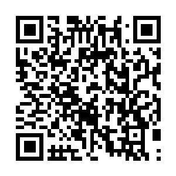

📷 Juega la misión en tu teléfonoLa energía es la capacidad de producir cambios o realizar un trabajo. No la podemos ver, pero notamos sus efectos en todas partes: el calor de una fogata, la luz de una lámpara, el sonido de la música o el movimiento de un carro. ¡Todo lo que ocurre necesita energía!
✅ También existen la energía sonora (el sonido) y la eléctrica (los aparatos).
| Forma | ¿Qué es? | Ejemplos |
|---|---|---|
| 💡 Luminosa | La energía de la luz | El Sol, una lámpara, una vela |
| 🔥 Calorífica | La energía del calor | Una fogata, la estufa, la plancha |
| 🔊 Sonora | La energía del sonido | La música, la voz, un parlante |
| 🔌 Eléctrica | La energía que mueve los aparatos | La tele, el refri, el teléfono |
| 🏃 Mecánica | La energía del movimiento | Un carro, el viento, una pelota |
Las fuentes de energía son los recursos de donde la obtenemos. Se dividen en dos grupos:
| Aparato o proceso | Recibe | Entrega |
|---|---|---|
| 🔦 Una linterna | Energía eléctrica (pila) | Energía luminosa (luz) |
| 🍳 Una estufa | Energía eléctrica | Energía calorífica (calor) |
| 📻 Una radio | Energía eléctrica | Energía sonora (sonido) |
| 🌀 Un ventilador | Energía eléctrica | Energía mecánica (movimiento) |
| 🌬️ Un molino de viento | Energía mecánica (viento) | Energía eléctrica |
Muchas fuentes de energía se agotan y contaminan. Por eso debemos usar la energía con cuidado: apagar las luces y los aparatos que no usamos, aprovechar la luz del día, usar focos ahorradores y desconectar los cargadores.
| Error | Por qué está mal | Lo correcto |
|---|---|---|
| Creer que el petróleo es renovable | El petróleo se agota y contamina. | Es no renovable ✔ |
| Pensar que la energía se crea de la nada | La energía no se crea ni se destruye. | Solo se transforma ✔ |
| Decir que la energía del calor es la sonora | La sonora es la del sonido. | La del calor es la calorífica ✔ |
| Creer que dejar luces encendidas ahorra | Gastar sin necesidad desperdicia energía. | Apagar lo que no se usa ✔ |
| Pensar que el Sol no sirve como fuente | El Sol es la principal fuente de la Tierra. | El Sol da luz y calor ✔ |
| Columna A | Columna B |
|---|---|
| 1. ____ Energía luminosa | A. La que hace funcionar los aparatos |
| 2. ____ Energía calorífica | B. La que se obtiene de la fuerza del agua |
| 3. ____ Energía sonora | C. La de una lámpara encendida |
| 4. ____ Energía mecánica | D. Las plantas fabrican su alimento con la luz del Sol |
| 5. ____ Energía eléctrica | E. La de la música |
| 6. ____ Energía química | F. De él sale la gasolina |
| 7. ____ Energía eólica | G. La que guardan los alimentos y las pilas |
| 8. ____ Hidroeléctrica | H. La de una fogata |
| 9. ____ Petróleo | I. La de un carro que avanza |
| 10. ____ Fotosíntesis | J. La que da el viento |
| Actividad | Lugar | Valor | Nota obtenida | Observación |
|---|---|---|---|---|
| Copió los contenidos de este material en su cuaderno de Ciencias Naturales. | Tarea en el hogar | 100 | ||
| Resolvió la sección «Ponte a Prueba» directamente en esta ficha. | Tarea en el aula, un día antes del examen | 100 | ||
| Hizo una lista de 5 aparatos de su casa con la forma de energía que entregan y una acción de ahorro. | Tarea en el hogar | 100 | ||
| Prueba impresa realizada en el aula. | Evaluación en el aula | 100 | ||
| Promedio nota final → | % | |||
Recuerde que ya aprendió a sacar el promedio: sume el total del valor obtenido y divídalo entre cuatro. El resultado será su nota final. Perderá puntos si no completa el trabajo, si su letra no es legible o si escribe con faltas de ortografía.
Esta hoja se imprime suelta: es solo para el docente o para la autoevaluación guiada.